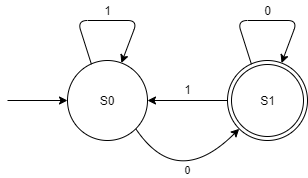
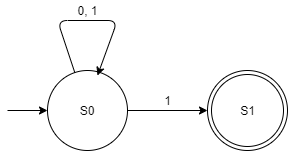
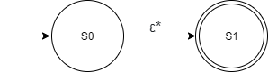
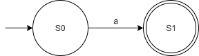
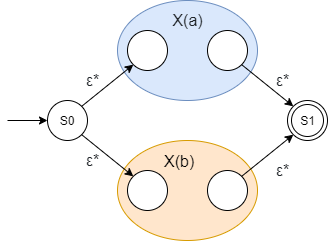
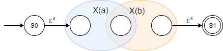
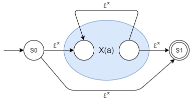

Regular Expressions are sequences of characters used as a search pattern. They are used to search text and find matchs to the sequence specifed. They have many different grammers, however for this project we will only concern ourselves with a few key ones.
The first one we will look at is Disjunction. This will match against either a or b. Below, the highlighted sections of the words show what matches a|b !
The second is Conjuction. This is one or more characters joined together. It matches against itself!
The third is the quantifier zero or more. It matches zero or more of the character or group it is attached to. It also matches empty strings!
+ serves as the quantifier of one or more. It does not match empty strings.
The ? quantifier signifies zero or one. Just like *, it also matches empty strings.
Groups are a very powerful tool, they work exactly like parenthesis in math. (a|b)* will match a or b zero or more times.
Finite Automata are pattern recognizing machines that accept or reject input words. At their core, they move within a set of states depending on transitions between these states. They are defined by a 5-tuple:
There are two main flavors of finite automata, Deterministic ones know as DFAs or Non-Deterministic ones know as NFA's.
Deterministic finite automatas are variations of finite automata. They are deterministic because there is exactly one sequence of steps for each string. This means that every state has at most one transition per symbol. Take for example the following DFA with a language of 0s and 1s.  Each state has two outgoing transitions, one on 1 and one on 0. It is also important to know that every DFA can be derived from a NFA through the powerset construction method, though we will not be looking at that transformation here.
Non-Deterministic Finite Automata are another variation of finite automata. Unlike DFAs they are non deterministic because they do not need to follow the same rules as DFAs. They have no restrictions on the number of transitions, or on multiple transitions on the same symbol. They also allow epsilon transitions, notated by ε*. These are special transitions that do not consume symbols when used. Below is an example NFA with a language of 0s and 1s.  To generate a NFA from a regular expression, a process credited to computer scientist Ken Thompson can be used.
To facilite changing a regular expression into a NFA, the Thompson's Contruction algorithm must be used. This algorithm is credited to Ken Thompson, the original creator of the unix grep command. The algothim recurivly splits the regualar expression up into its sub expressions, and generates a equivalent NFA for each. The algorithm then joins the NFAs together, creating an NFA equivalent to the regular expression. Here we will walk you through the building blocks the algorithm uses to construct the final NFA. Note, in the following X(a) and X(b) denote the subexpressions of a and b.
The empty expression is converted into the following NFA 
A lone symbol is converted into the NFA 
A disjunction is split into the following, where from S0 you either go into the start state of X(a) or X(b) 
Conjunction joins the NFAs of X(a) and X(b) by connecting X(a)'s end state to X(b)'s start state 
Zero or more becomes the following. ε* transitions are added to allow skipping it or looping through it.  One or more and zero or one are variations of this NFA.